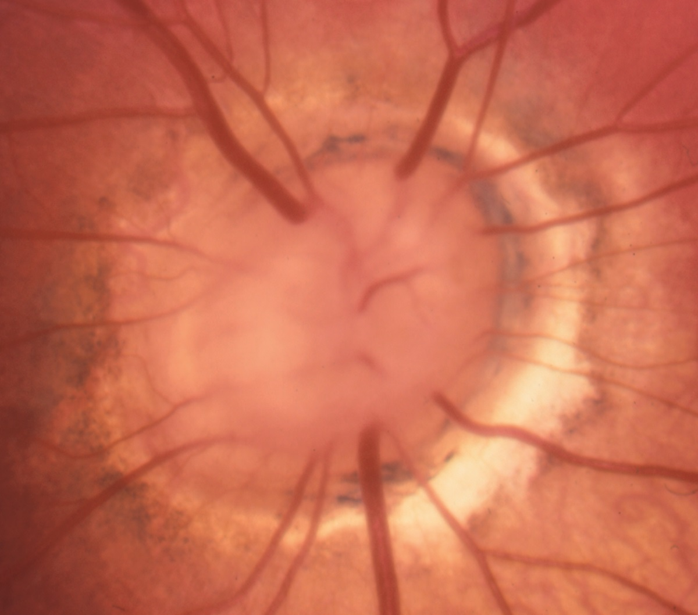
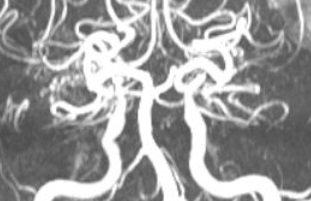
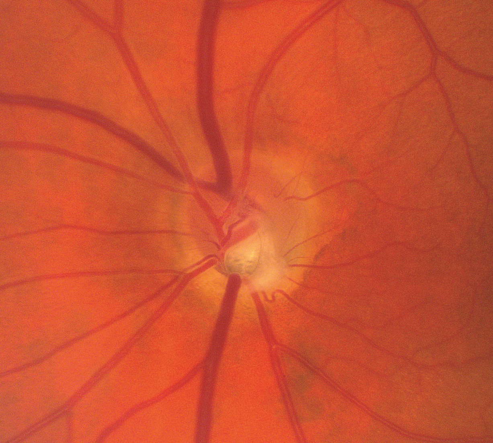

Morning Glory Optic Pit Neuropathy

- Congenital funnel-shaped excavation of posterior ocular wall that encompasses abnormal optic disc
- Severe vision deficit owing to absent optic nerve axons
- Forebrain and carotid artery anomalies often present
-
Core features
- Crater-like depression of optic disc usually confined to one eye
- Spoke-like retinal vessels emerging from margins of crater giving rise to term “morning glory”
- Peripapillary speckled atrophic retinal and choroidal tissue
- Poor vision and afferent pupil defect in affected eye
-
Possible accompanying features
- Serous retinal detachment
- Intracranial anomalies: basal encephalocele, dysplastic corpus callosum
- Extracranial anomaly: hypoplastic carotid arteries with prominent abnormal cranial base anastomoses (“moya moya disease”)
- Hypopituitarism


- Explain that affected eye will never see properly
- Perform vascular and brain imaging in search of potentially life-threatening brain and vascular anomalies
- Perform blood tests in search of impaired pituitary hormone function

- Management directed at non-ophthalmic anomalies